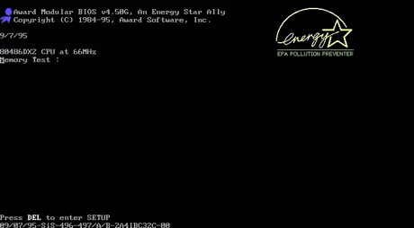

a tag
anchor : 대상을 지정하여, 대상의 위치로 이동한다
HyperText Transfer Protocol
HyperText : 문서와 문서간에 링크로 연결된 형식의 텍스트
네이버
a : anchor
href : Http REFerence

- a 태그 안에는 글자, 버튼, 그림 등을 배치할 수 있다
- a 태그의 대상은 사이트 주소, 현재 문서 내 id, 파일 등이 될 수 있다
- 링크가 파일을 가리키면, 브라우저에서 열린다
- 만약, 파일의 형식이 브라우저에서 처리할 수 없는 형식이면 다운로드한다
텍스트 파일
이미지 파일
동영상 파일
윈도우 실행 파일
압축 파일
상대경로를 이용한 다른 HTML 문서
a 태그는 inline 이므로, 내부에서 block 요소를 포함시키지 않도록 한다
